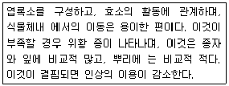
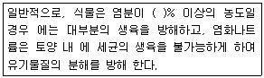
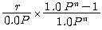
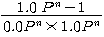
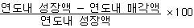
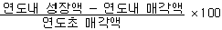
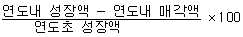

산림기사 (2009-03-01 기출문제)
1과목: 조림학
1. 죽림작업을 통한 대나무의 번식방법에 대한 설명으로 틀린 것은?
- 지하경의 눈이 나오기 전인 3~4월경에 굴취를 해서 죽림을 조성한다.
- 벌죽시기는 맹종죽은 9월경에, 왕대는 10~11월에 실 시 한다.
- 벌죽을 강하게 하면 죽순 발생이 촉진되고 직경이 굵 은 대나무를 얻을 수 있다.
- 죽림의 벌채는 택벌을 원칙으로 하나 국부적으로는 소립해 있는 부분은 개벌해서 개식 또는 지하경을 유 인해서 갱신하는 일이 있다.
(정답률: 63%)

2. 간벌의 특징 설명으로 맞는 것은?
- 조기에 간벌 수익을 얻을 수 있다.
- 산불의 위험성이 증대된다.
- 생산될 목재의 형질을 저하시킨다.
- 입지조건의 개량에 방해된다.
(정답률: 86%)
3. 다음은 무엇에 대한 설명인가?

- K
- N
- Ca
- Mg
(정답률: 77%)
4. 속성수 조림에서 현사시나무는 ha당 800주 정도 심는 다. 이 때의 식재거리(植栽距離)는 어느정도가 좋은가?
- 7.5m × 7.5m
- 5m × 5m
- 3.5m × 3.5m
- 1m × 1m
(정답률: 86%)
5. 식생조사 분석에 있어서 10개의 plot중에 한 수종이 한 plot 에만 나타나고 있을 때 그 수종의 무엇이 10&라고 하는가?
- 피도
- 밀도
- 수도
- 빈도
(정답률: 57%)
6. 침엽수와 활엽수의 배유는 염색체 구성이 다른 것이 특징이다. 침엽수 배유과 활엽수 배유의 염색체 구성을 바르게 서술한 것은?
- 침엽수 배유(2n), 활엽수 배유(n)
- 침엽수 배유(3n), 활엽수 배유(n)
- 침엽수 배유(n), 활엽수 배유(3n)
- 침엽수 배유(n) 활엽수 배유(2n)
(정답률: 64%)
7. 가지치기(Pruning)의 효과로 틀린 것은?
- 마디가 적은 재목을 얻을 수 있다.
- 신장생장을 촉진시킨다.
- 임목 상호간의 부분적 경쟁을 촉진시킨다.
- 산화(山火)의 위험성을 경감시킨다.
(정답률: 80%)
8. 다음 중 삽목 발근이 가장 어려운 수종은?
- 밤나무
- 모과나무
- 삼나무
- 무궁화
(정답률: 59%)
9. 종자 재취 적기를 판단하는 일반적인 기준으로 가정 적 합한 것은?
- 구과의 단단함이 약간 풀린 상태일 때 채취한다.
- 함수율이 증가할 때 채취한다.
- 구과의 색깔이 퇴색되지 않을 때 채취한다.
- 피나무류는 완전 성숙된 종자를 채취한다.
(정답률: 60%)
10. 대면적개벌천연하종갱신에 대한 바른 설명은?
- 작업의 실행이 늦다.
- 양수의 갱신에 적용이 가능하다.
- 토양의 이화학적 성질이 좋아진다.
- 이령림 형성에 유리하다.
(정답률: 81%)
11. 수목의 내음성과 여기에 영향을 미치는 인자와의 관계 설명으로 틀린 것은?
- 토양 수분조건이 좋아지면 내음성이 강해진다.
- 양료가 풍부하면 내음성이 강해진다.
- 온도가 높을수록 수목이 요구하는 광량은 줄어든다.
- 산 높이의 증가에 따라 그 수종의 광선요구량이 감소한다.
(정답률: 59%)
12. 벌구의 임목을 전부 혹은 경우에 따라서는 대부분을 일시에 벌채하는 방법은?
- 간벌
- 개벌
- 산벌
- 택벌
(정답률: 82%)
13. 강송을 양묘할려고 채종하였다. 열매를 탈각하여 5kg을 얻었으며 정선하여 엳은 순정종자는 4.5kg이었다. 이 종자의 발아율을 조사하니 80%였다면 이 종자의 효율은 얼마인가?
- 0.90
- 0.80
- 0.72
- 0.64
(정답률: 88%)
14. 식물체 내 여러 가지 중요한 기능을 나타내는 무기양료에서 건전한 잎의 건중(乾重)에 포함되 다량원소가 아닌 것은?
- 철
- 질소
- 마그네슘
- 황
(정답률: 70%)
15. 장령림의 시비에 대한 설명으로 올바른 것은?
- 항공시비에서는 가루 형태의 비료보다 굵은 입자 형 태의 비료를 살포하는 것이 좋다.
- 임지시비의 시기는 노동력을 동원하기 쉬운 늦여름이 나 초가을이 적기이다.
- 임지시비는 묘목을 식재한 이듬해의 가을에 1회 시비 하는 것만으로 충분하다.
- 뿌리가 땅속 깊이 뻗어있기 때문에 구덩이를 깊이 파 고 시비해야 한다.
(정답률: 83%)
16. 토양단면에서 부식이 바로 위에 있는 층보다 적고 갈색 또는 황갈색을 띠며 가용성 염기류가 많고 비교적 견밀 한 특징을 구비한 토양층은?
- 유기물층
- 용탈층
- 집적층
- 모재
(정답률: 70%)
17. 목재를 구성하는 성분 중 가장 많은 것은?
- 수지
- 셀룰로오스
- 리그닌
- 녹말
(정답률: 63%)
18. 건조봉타법으로 탈종을 해서 종자를 얻으려고 할 때 가 장 효과적인 수종은?
- 오리나무
- 단풍나무
- 옻나무
- 녹말
(정답률: 35%)
19. 순림과 혼효림에 대한 설명 중 틀린 것은?
- 순림은 산림작업과 경영이 간편하고 경제적으로 수행 될 수 있다.
- 혼효림은 심근성과 천근성 수종이 혼생할 때 바람 저 항성이 증가하고 토양단면 공간 이용이 효과적이다.
- 순림은 혼효림보다 유기물의 분해가 더 빨라져 무기 양료 의 순환이 더 잘 된다.
- 순림을 양수(陽樹)로 만들면 엽량(葉量)생산이 증가되 므로 비료로 사용될 때에는 그만큼 유리하게 된다.
(정답률: 81%)
20. 치환성양이온으로서 토양교질 입자에 부착되지 못하는 것은?
- Ca이온
- Mg 이온
- Na이온
- So4 이온
(정답률: 69%)
2과목: 산림보호학
21. 선충에 의한 수목병에 대한 설명으로 틀린 것은?
- 수목에서는 열대 및 아열대 지역의 관목의 잎에 피해 를 준다.
- 소나무시들음병은 솔수염하늘소가 가장 중요한 매개 충이다.
- 묘포에서 유묘의 뿌리에 선충병의 발생이 우려되면 석회를 시용하여 방제한다.
- 선충은 실 모양의 형태를 가진 벌레로 선충문(線蟲門)에 속하는 무척추하등동물이다.
(정답률: 36%)
22. 하늘소 중에서 똥을 밖으로 배출하지 않아 발견하기 어 려운 해충은?
- 알락하늘소
- 뽕나무하늘소
- 향나무하늘소
- 솔수염하늘소
(정답률: 86%)
23. 솔나방의 월동 형태는?
- 유충
- 알
- 번데기
- 성충
(정답률: 64%)
24. 잣나무 털녹병의 중간기주(中間寄主)는 어느 것인가?
- 전나무
- 소나무
- 참나무류
- 송이풀
(정답률: 91%)
25. 밤나무흑벌의 월동 형태로 가장 적당한 것은?
- 알
- 유충
- 성충
- 번데기
(정답률: 75%)
26. 곤충의 신결절과 비슷한 기관으로 유약호르몬을 분비하 는 조직은?
- 지방체
- 편도세포
- 더듬이
- 알라타체
(정답률: 68%)
27. 대추나무 빗자루병의 병원은?
- 바이러스
- 세균
- 균류
- 파이토플라스마
(정답률: 84%)
28. 솔잎혹파리의 피해가 가장 심한 수종은?
- 소나무(적송)
- 리기다소나무
- 낙엽송
- 잣나무
(정답률: 74%)
29. 해안지방에서 방조림을 조성시, 주목(主木)으로 가장 많 이 사용되는 수종은?
- Pinus thunbergii
- Pinus densiflora
- Cryptomeria Japonica
- Abies holophylla
(정답률: 80%)
30. 다음( )에 적합한 수치는?

- 0.1%
- 0.3%
- 0.5%
- 0.7%
(정답률: 64%)
31. 세균(細菌)에 의한 수목 병해는?
- 밤나무 뿌리혹병
- 향나무 녹병
- 벚나무 빗자루병
- 삼나무 붉은마름(浾枯)병
(정답률: 85%)
32. 뿌리에 나타나는 선충의 병징이 아닌 것은?
- 괴저병반(necrotic Lesion)
- 뿌리혹(root knot)
- 토막뿌리(stubby root)
- 황화(chlorosis)
(정답률: 60%)
33. 소나무 좀은 1년에 몇 회 발생하는가?
- 1회
- 2회
- 3회
- 4회
(정답률: 89%)
34. 질소질 비료 과용과 가장 관계가 깊은 수병은?
- 모잘록병
- 포플러 점무늬잎떨림병
- 향나무 녹병
- 잣나무 털녹병
(정답률: 83%)
35. 곤충의 외분비물질로 특히 개척자가 새로운 기주를 찾았다고 동족을 불러 들이는데 사용되는 종내 통신물질로 나무 종류에서 발달되어 있는 물질은?
- 집합 페로몬
- 경보 페로몬
- 길잡이 페로몬
- 성 페로몬
(정답률: 88%)
36. 식물의 뿌리나 파종한 종자를 식해하며, 묘포에서는 묘 목의 싹은 물론 어린 잎과 줄기까지도 식해하는 동물은?
- 산토끼
- 족제비
- 노루
- 들쥐
(정답률: 67%)
37. 산리에서 피해를 주는 두더지에 관한 사항 중 틀린 것은?
- 두더지는 묘목의 뿌리를 섭식하여 피해를 주기도 한다.
- 묘포장의 흙을 들어올려 뿌리가 건조해를 받기도 한다.
- 묘포장의 주변에 1m 깊이의 도랑을 파서 침입을 막 을 수 있다.
- 두더지는 시각은 둔하지만 소리와 냄새에는 매우 민감하다.
(정답률: 60%)
38. 솔잎혹파리 성숙유충의 크기는?
- 0.5mm ~ 1.0mm
- 1.0mm ~ 1.5mm
- 1.7mm ~ 2.5mm
- 3.5mm 내외이다.
(정답률: 78%)
39. 소나무좀 유충은 주로 수목의 어느 부분을 가해하는가?
- 신소
- 수피 내측의 인피부
- 생장점
- 종자
(정답률: 60%)
40. 주로 곤충이나 소동물에 의하여 전반되는 병은?
- 오동나무 빗자루병
- 향나무 붉은별무늬병
- 호두나무 갈색부패병
- 벚나무 뿌리혹병
(정답률: 63%)
3과목: 임업경영학
41. 회귀년 길이의 장단을 여러 가지 측면에서 고려할 때, 장기적인 측면에서 가장 유리한 관계는?
- 조림
- 산림보호
- 벌채작업
- 재정
(정답률: 48%)
42. 최소시 이용객수가 300명, 평균이용객수가 500명, 최대 시 이용객수가 800명, 이용율이 1/80 일 때, 1인당 소 요면적이 3.3m2 이라면 화장실의 소요 공간규모는?
- 12.38m2
- 20.63m2
- 33.00m2
- 40.00m2
(정답률: 70%)
43. 자연휴양림과 도시공원녹지와의 비교시 가장 큰 차이점은?
- 산림의 생산활동
- 레크레이션 이용
- 공공 주체
- 정서 함양
(정답률: 75%)
44. 현실적인 임업경영의 목적에 의한 경영형태 중 주업적 임업경영은 노동 및 자금의 투입과 판매수입면에서 개벌경제에 대하여 차지하는 비중이 크다. 다음 중에서 기계화된 임업경영의 형태로 큰 회사의 산업비림에서 볼 수 있는 유형은?
- 식재 → 육림 → 임목 매각
- 식재 → 육림 → 벌채 → 원목 매각
- 식재 → 육림 → 벌채 → 표고 생산ㆍ제탄ㆍ제재
- 식재 → 육림 → 벌채 → 원료 원목공급(제지)
(정답률: 74%)
45. 휴양림 내 놀이시설이 그 사용자에게 주는 가치 중 가 장 거리가 먼 것은?
- 사회적 가치
- 정서적 가치
- 생리적 가치
- 예술적 가치
(정답률: 74%)
46. 복합적 임업경영의 형태 중에서 임목이 울폐되기 전 일 정기간 동안 산림 내에 가축을 방목하여 임지의 야생초 를 이용하게 하는 방법은?
- 전용임업
- 부산물임업
- 수예적임업
- 혼목임업
(정답률: 80%)
47. 임업자산 중에서 가장 가치가 큰 것은?
- 차량
- 건물
- 임목축적
- 임도
(정답률: 82%)
48. 자연휴양림의 적지선정에서 수용 측면에서 고려하여야 할 사항은?
- 다수 국민이 쉽게 접근 또는 이용할 수 있는 지역의 산림지
- 자연경관이 아름답고 임상이 울창한 산림지
- 지형이 완경사로 표면배수가 양호하고 재해 발생위험 이 적은 지역
- 주변에 소하천 및 호수 등의 입지와 식수원의 확보가 가능한 곳
(정답률: 70%)
49. 임지기망가의 최대값에 관한 설명 중 틀린 것은?
- 주벌수익의 증가속도가 빠를수록 임지기망가의 최대 값이 빨리온다
- 간벌수익이 많을수록 임지기망가의 최대값이 빨리온다.
- 조림비가 많을수록 임지기망가의 최대 시기가 늦어진다.
- 이율이 높을수록 임지기망가의 최대값이 늦어진다.
(정답률: 67%)
50. 레크레이션 수요를 산출하는데 고려해야 할 요인으로서 거리가 먼 것은?
- 관리 주체
- 잠재적 이용자
- 대상지역
- 접근성
(정답률: 68%)
51. 법정림의 산림면적이 60ha, 윤벌기 60년, 1영급을 편 성한 영계수를 10년이라 할 때의 법정 영급 면적은? (단, 갱신기 r = 0 이다.)
- 10ha
- 20ha
- 30ha
- 50ha
(정답률: 73%)
52. 매년말 r씩 n회 수득할 수 있는 이자의 전가합계를 구 하는식 K=

에서
은 무엇인가?- 연금불현가계수
- 연금후가계수
- 자본회수계수
- 감채계수
(정답률: 61%)
53. 한해에 자란 임목자산 중에서 판매되지 아니하고 남아 있는 임목자산의 비율을 성장액의 내부보류율이라고 하 는데 그 계산식으로 맞는 것은?



(정답률: 68%)
54. 잣나무의 흉고직경이 36cm, 수고가 25m일 때, 덴진(Denzin) 식에 의하여 재적을 구하면 몇 m3인가?
- 0.025 m3
- 0.036 m3
- 1.296 m3
- 2.592 m3
(정답률: 69%)
55. 경영자가 관리회계에서 다루는 문제 중 예정된 원가와 실제로 발생한 원가사이에 어떠한 차이가 있으며 그 원 인이 무엇인가 을 검토하는 것을 무엇이라 하는가?
- 원가계산
- 원가통제
- 업적평가
- 계획수립
(정답률: 67%)
56. 수간석해를 할 때 원판 채취방법 설명으로 틀린 것은?
- Huber 식에 의한 방법은 흉고이상은 2m마다 원판을 채취하고 최후의 것은 1m가 되도록 한다.
- 원판을 채취할 때는 수간과 직교하도록 한다.
- 원판의 두께는 10cm가 되도록 한다.
- 측정하지 않을 단면에는 원판의 번호와 위치를 표시 하여 둔다.
(정답률: 69%)
57. 공공성을 띤 야외 휴양의 마케팅 활동에 속하지 않은 것은?
- 휴양상품의 판매촉진
- 입장료 또는 이용료의 산정
- 관리자에 대한 서비스 개발
- 휴양기회와 편익의 효율적 분배
(정답률: 53%)
58. 평균생장량과 연년생장량간의 관계를 옳게 설명한 것은?
- 평균생장량이 최대점에 이르기까지는 연년생장량이 평균 생장량보다 항상 작다.
- 평균생장량이 최대가 될 때, 연년생장량과 평균생장량은 같게 된다.
- 평균생장량이 연년생장량에 비해 최대점에 빨리 도달한다.
- 초기에는 평균생장량이 연년생장량보다 크다
(정답률: 90%)
59. 임지비용가법을 적용할 수 있는 경우가 아닌 것은?
- 임지소유자가 매각할 때 최소한 그 토지에 투입된 비용을 회수하고자 할때
- 이지소유자가 그 토지에 투입한 자본의 경제적 효과를 분석 검토하고자 할 때
- 임지의 가격을 평정하는데 다른 적당한 방법이 없을때
- 임지에 일정한 시업을 영구적으로 실시한다고 가정 하여 그 토지에서 기대되는 순수익의 현재 합계액을 산출할 때
(정답률: 66%)
60. 투자비용의 현재가에 대하여 투자의 결과로 기대되는 현 금 유입의 현재가비율을 나타내는 것으로 투자효율을 결 정하는 방법은?
- 수익ㆍ비용률법
- 순 현재가치법
- 투자 이익률법
- 회수기간법
(정답률: 61%)
4과목: 임도공학
61. 트래버스 측량에서 수평각의 관측방법에 해당하지 않는 것은?
- 방위각법
- 편각법
- 교각법
- 삼각법
(정답률: 63%)
62. 강우에 의한 토양침식의 발달과정으로 옳은 것은?
- 우격침식 → 면상침식 → 누구침식 → 구곡침식
- 우격침식 → 누구침식 → 면상침식 → 구곡침식
- 우격침식 → 구곡침식 → 누구침식 → 면상침식
- 우격침식 → 누구침식 → 구곡침식 → 면상침식
(정답률: 86%)
63. 3급 선떼붙이기공법에서 비탈경사 35~35° 일 경우 1m당 떼 사용매수는? (단, 떼의 크기가 길이 40cm, 나비 25cm 일 경우이다)
- 12.5장
- 10.0장
- 7.5장
- 6.25장
(정답률: 75%)
64. 임도에서 헤어핀커브를 설치하는 목적이 아닌 것은?
- 임도의 거리를 단축한다
- 임도 경사를 완화한다.
- 교통의 안전을 확보한다.
- 목재 운반의 위험도를 줄인다.
(정답률: 78%)
65. 기초지반을 시공하기 위한 성토재료의 특성으로 적당 하지 않은 것은?
- 시공이 용이해야 한다.
- 전단강도가 작아야 한다.
- 압축성이 작아야 한다.
- 흡수성이 작아야 한다.
(정답률: 63%)
66. 특수지형의 경우라도 종단기울기의 기준을 적용하기 어 려운 경우에는 노면포장을 하는 경우에 한하여 몇 %의 범위내에서 조정할 수 있는가? (단, 산림관리기반시설의 설계 및 시설기준 적용)
- 15%
- 18%
- 20%
- 25%
(정답률: 56%)
67. 임도 절개지 처리 공사시 암반으로 된 급물매 비탈면 을 콘크리트 뿜어 붙이기 공법으로 처리할 때, 한랭지 방에서 시공하는 두께로 적합한 것은?
- 1~2cm
- 4~5cm
- 7~9cm
- 11~15cm
(정답률: 38%)
68. 간선임도에서 차돌림곳의 최소 너비는 몇 m 이상으로 하는가? (단. 산림관리기반시설의 설계 및 시설기준 적용)
- 10m
- 15m
- 20m
- 25m
(정답률: 32%)
69. 임도 측량적업의 과정 가운데 예측시에 실행하여야 할 사항은 어느 것인가?
- 임도설계에 필요한 각종 요인을 조사한다.
- 임시노선에 대하여 현지에 나가서 그 적정여부를 조 사한다.
- 평면측량을 실행하고 종단, 횡단측량을 실행한다.
- 예정노선을 간단한 기계를 사용 실측하여 도면을 작 성한다.
(정답률: 45%)
70. 임도 지장목을 이용하여 주로 강우로 인한 토사유출을 방지할 목적으로 시공하는 공법은?
- 식생공
- 편책공
- 틀공
- 식수공
(정답률: 73%)
71. 임도를 임도이용의 집약성에 따라 주임도와 부임도로 구분 할때 부임도(지선망)에 대한 설명으로 옳은 것은?
- 산촌의 농경지와 부락을 지나간다.
- 트랙터 등 원목집재에 필수적인 도로이다.
- 다음 집재 작업까지 방치해 놓는다.
- 순수한 산림개발의 목적으로 만든다.
(정답률: 38%)
72. 토질시험시 입경가적곡선에서 유효입경은 가적통과율 의 몇 %에 해당하는가?
- 10%
- 20%
- 60%
- 100%
(정답률: 60%)
73. T자형 및 L자형 옹벽의 경제적인 높이로 적당한 것은?
- 3~4m
- 4~5m
- 5~6m
- 6~7m
(정답률: 29%)
74. 임도는 그 단면을 보면 여러 가지 층으로 이루어져 있 으며 이를 노체(路體,도로)라고도 한다. 노체의 기본구 조를 그 시공 순서대로 나열한 것은?
- 표층 → 기층 → 노상 → 노반
- 노상 → 노반 → 기층 → 표층
- 노반 → 기층 → 표층 → 노상
- 기층 → 표층 → 노반 → 노상
(정답률: 82%)
75. 포장도로가 아닌 곳으로서 종단기울기의 대수차가 몇% 이 하일 때 종단곡선의 기준을 적용하지 않아도 되는가? (단, 산림관리기반시설의 설계 및 시설기준을 적용한다.)
- 15%이하
- 10%이하
- 8%이하
- 5%이하
(정답률: 37%)
76. 1/25000 지형도상에서 산정표고가 225.75m, 산밑의 표고가 47.25m인 사면의 경사는? (단, 산정부터 산밑까지의 지형도상의 수평거리는 5cm임)
- 약 10%
- 약 12%
- 약 14%
- 약 16%
(정답률: 57%)
77. 산림관리기반시설의 설계 및 시설기준에 따른 산불방지 임도 시설인 대피소의 설치 간격은 몇 미터 이내로 하는가?(오류 신고가 접수된 문제입니다. 반드시 정답과 해설을 확인하시기 바랍니다.)
- 200m
- 300m
- 400m
- 500m
(정답률: 18%)
78. 결합트래버스변의 총 길이가 2.5km이다. 폐합비를 1/5000로 제한 할 때 최대 폐합오차는 얼마인가?
- 0.2m
- 0.5
- 0.8m
- 1.0m
(정답률: 57%)
79. 임도시공용 기계에서 일반적으로 다짐을 하는데 적합하 지않는 기계는?
- 진동콤팩터(vibrating compactor)
- 모터 그레이더(motor grader)
- 타이어 롤러(tire roller)
- 래머(rammer)
(정답률: 49%)
80. 노면 또는 땅깎기 비탈면에 물을 모아서 배수하기 위 하여 길어깨와 비탈사이에 종단방향으로 설치하는 배수 시설은?
- 옆도랑
- 겉도랑
- 목도랑
- 빗물받이
(정답률: 82%)
5과목: 사방공학
81. 비탈 옹벽공법을 재료 및 구조에 따라 분류할 때 이 중 구조에 따라 분류한 것이 아닌 것은?
- 중력식 옹벽
- 부벽식 옹벽
- T형 옹벽
- 돌망태 옹벽
(정답률: 79%)
82. 비교적 짧은 기간 내에 시공할 필요가 있거나 또는 자 재 운반의 반입에 많은 경비가 소요될 때 유리한 사방댐은?
- 강제댐
- 통나무댐
- 철근콘크리트댐
- 흙댐
(정답률: 59%)
83. 해안사방지의 조림용 수종이 구비해야 할 조건과 거리 가 먼 것은?
- 바람에 대한 저항력이 클 것
- 양분과 수분에 대한 요구가 많을 것
- 온도의 급격한 변화에도 잘 견디어 낼 것
- 조풍의 피해에도 잘 견디어 낼 것
(정답률: 85%)
84. 계류의 유심을 변경시키기 위하여 설치하는 사방공작물은?
- 둑막이
- 수제공
- 바닥막이
- 기슭막이
(정답률: 81%)
85. 계간사방계획 중에서 재해가 발생되었을 때 하류의 가 옥과 경지 등을 복구하기 위한 계획은?
- 경상계획
- 예방계획
- 응급계획
- 민생계획
(정답률: 72%)
86. 해안사방에서 사초심기공법의 사초 식재방법이 아닌 것은?
- 점심기
- 줄심기
- 망심기
- 다발심기
(정답률: 62%)
87. 댐의 방수로 크기를 경정하기 위한 최대홍수량 산정방 법 중 합리식 방법은? (단, 식에서 Q: 유역출구에서의 최대홍수유량, C: 유출계 수, V: 유속, I: 강우강도, A: 유역면적을 나타낸다.)
- Q = CVA
- Q = 1/4 VA
- Q = (VI/)C
- Q = CIA
(정답률: 80%)
88. 배수로의 횡단면에서 윤변이 10m, 유적이 15m2일 때 경심은 몇 m인가? (단, 이 때 수면의 나비가 매우 넓어 윤변과 수면의 나 비가 같다고 본다.)
- 0.5m
- 1.0m
- 1.5m
- 2.0m
(정답률: 82%)
89. 땅깎기 비탈에 흙이 떨어지지 않은 반떼를 수평방향으 로 줄로 붙여서 활착 녹화시키는 공법은?
- 줄떼 다지기 공법
- 줄떼 붙이기 공법
- 줄떼 심기 공법
- 줄떼 뿌리기 공법
(정답률: 84%)
90. 우리나라 토양을 구성하고 있는 모재중 분포 비율이 가 장 높은 것은?
- 화강 편마암계
- 결정 편암계
- 현무암
- 충적암
(정답률: 88%)
91. 비탈면 녹화공종에서 초식공법으로만 짝지어진 것은?
- 힘줄박기공법, 새심기공법
- 줄떼심기공법, 평떼공법
- 격자틀붙이기공법, 선떼붙이기공법
- 돌망태쌓기공법, 바자얽기공법
(정답률: 84%)
92. 속도랑에서 가장 많이 사용되는 수로횡단면형은?
- 반원형
- 사다리꼴형
- 직사각형
- 활꼴형
(정답률: 48%)
93. 비탈면다듬기공사의 토사량을 평균단면적법에 의해 구 하려고 한다. 양단면적이 각각 10m2, 20m2이고, 양단 면적간의 거리가 20m일 때 예정토사량은 얼마인가?
- 600m3
- 400m3
- 300m3
- 200m3
(정답률: 80%)
94. 사방댐의 시공요령으로 틀리는 것은?
- 찰쌓기를 할 때 3m2당 1개의 물빼기 구멍을 설치한다.
- 계상의 양한에 암반이 있는 지역이 시공적지이다.
- 방수료 양옆의 기울기는 1:1이 표준이다.
- 보통 안정물매는 하상물매의 2/3~4/5이다.
(정답률: 66%)
95. 토양침식형태를 물침식과 중력침식으로 분류할 때 중력 침식에 해당되지 않는 것은?
- 산사태
- 땅밀림
- 암설붕락
- 누구침식
(정답률: 72%)
96. 산림소유역 유출수량 관측시험이 아닌 것은?
- 단독법(single area method)
- 대조유역법(control area method)
- 교차법(crossing area method)
- 병행법(parallel area method)
(정답률: 48%)
97. 산복사방공사에 해당하는 것은?
- 누구막이
- 기슭막이
- 바닥막이
- 골막이
(정답률: 50%)
98. 중력사방댐의 안정조건 중 전도에 대한 안정을 위해서 는 합력작용선이 제저(堤底) 중앙의 얼마 이내를 통과 해야하는가?
- 1/2
- 1/3
- 1/4
- 1/5
(정답률: 78%)
99. 일반묘 및 포트묘 식재공법에서 식재수종의 선정시 갖 추어야 할 조건 중에서 직접적인 사항이 아닌 것은?
- 미관이 좋은 수종
- 토양개량효과가 기대되는 수종
- 생장력이 왕성하여 잘 번무하는 수종
- 뿌리의 뻗음이 좋고 토양의 긴박능력이 큰 수종
(정답률: 73%)
100. 일반적인 모래막이 공작물의 형상이 아닌 것은?
- 주걱형
- 자루형
- 침상형
- 위형
(정답률: 76%)